Credits: some of the images were take from Clipart Panda and ClipArtHut
Background
The Shadow Mapping algorithm that we explored in tutorial 23 and tutorial 24 used a spot light as the light source. The algorithm itself is based on the idea of rendering into a shadow map from the light point of view. This is simple with spot lights because they behave in the same way as our standard camera. The spot light has a location and a direction vector and the area covered by the light grows as we move further away from its source:
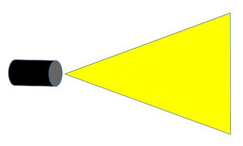The fact that the spotlight behaves like a frustum makes it easier to implement shadow mapping because we can use the same perspective projection matrix as the camera in order to render into the shadow map. Implementing Shadow Mapping with Point Lights was a bit of a challenge but we were able to overcome it by rendering into a cubemap. Projection, though, was still perspective.
Now let's think about directional lights. A directional light has a direction but not a position. It is usually used to mimic the behavior of the sun which due to its size and distance seems to cast parallel lights rays:
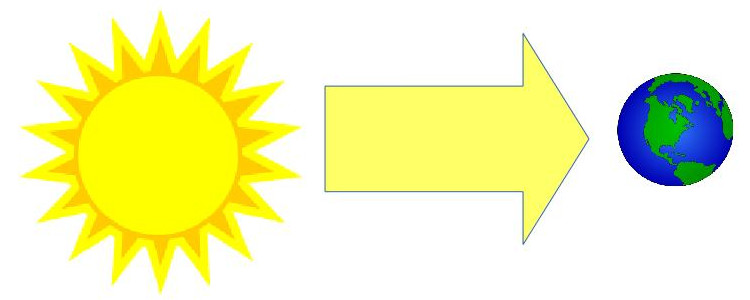In this case, we can no longer use Perspective Projection. Enter Orthographic Projection. The idea here is that of converging all light rays in one spot (the camera), the light rays remain parallel so no 3D effect is created.
In the following image we see the same box using perspective projection on the left hand side and orthographic projection on the right hand side:
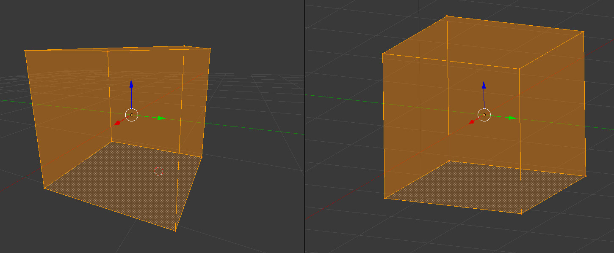The left box looks real, just as you would expect it to be and delivers the correct sense of depth. The right one doesn't look real since the front and back rectangles are exactly the same. We know that their dimensions are the same but when looking at a picture we expect the front one to look larger. So how does Orthographic Projection helps us with directional lights? Well, remember that Perspective Projection takes something that looks like a frustum and maps it to a normalized cube (a cube that goes from [-1,-1,-1] to [1,1,1]). After mapping, the XY coordinates are used to find the location in the texture (in our case the shadow map) and the Z is the value which is written there. An Orthographic projection takes a general box and maps it to the normalized cube (l,r,b,t,n,f stands for left, right, bottom, top, near, far, respectively):
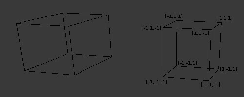Now think about the rays of the directional light as if they are originating from the front face of the box and going parallel to each other until they hit the back face. If we do the mapping between the general box and the normalized box (remember - we call this NDC space) properly the rest of the generation of the shadow map remains the same.
Let's see how this mapping is done. We have three ranges along the XYZ axes that we need to map to (-1,1). This is a simple linear mapping without divide-by-zero after that (since it is orthographic and not perspective). The general form of an equation that maps range (a,b) to (c,d) is:
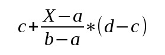Where a<=X<=b. Let's do the mapping on the X-axis. Plug the ranges (l,r) to (-1,1) in the above equation and we get:
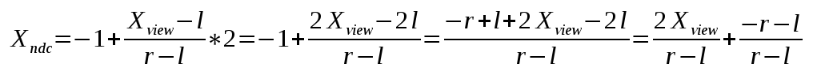Following the same logic we do the mapping on the Y-axis from (b,t) to (-1,1):
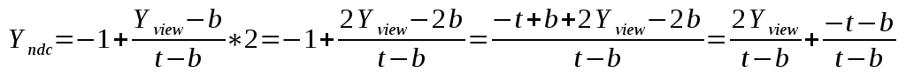In the case of the Z-axis we need to map (n,f) to (-1,1):
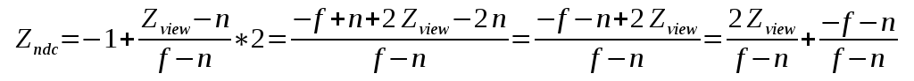Now that we have the three mapping equations let's create a matrix to wrap them together nicely:
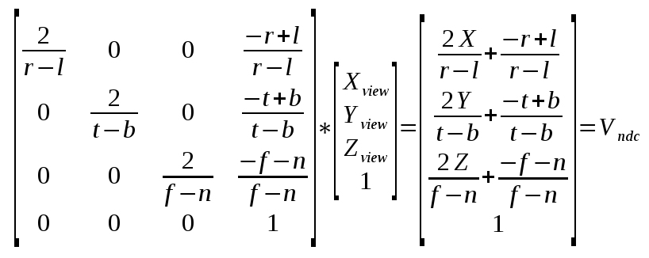Compare this matrix with the one we created for perpective projection in tutorial 12. An important difference is that in location [3,2] (count starts at zero) we have 0 instead of 1. For perspective projection the 1 was required in order to copy the Z into the W location of the result. This allows the GPU to perform perspective divide when everything is divided automatically by W (and you cannot disable this). In the case of orthographic projection the W will remain as 1, effectively disabling this operation.
When working on shadow mapping with directional lights you need to be careful about how you define the dimensions of orthographic projection. With perspective projection life is a bit simpler. The field-of-view defines how wide the camera is and due to the nature of the frustum we capture more and more as we move further away from the viewer (same as how our eye functions). We also need to define a near and far plane to control clipping based on distance. In many cases the same values of field-of-view, near and far plane will work just fine. But in the case of orthographic projection we have a box rather than a frustum and if we are not careful we may "miss" the objects and not render anything. Let's see an example. In the scene below left and bottom are -10, right and top are 10, the near plane is -10 and the far plane is 100:
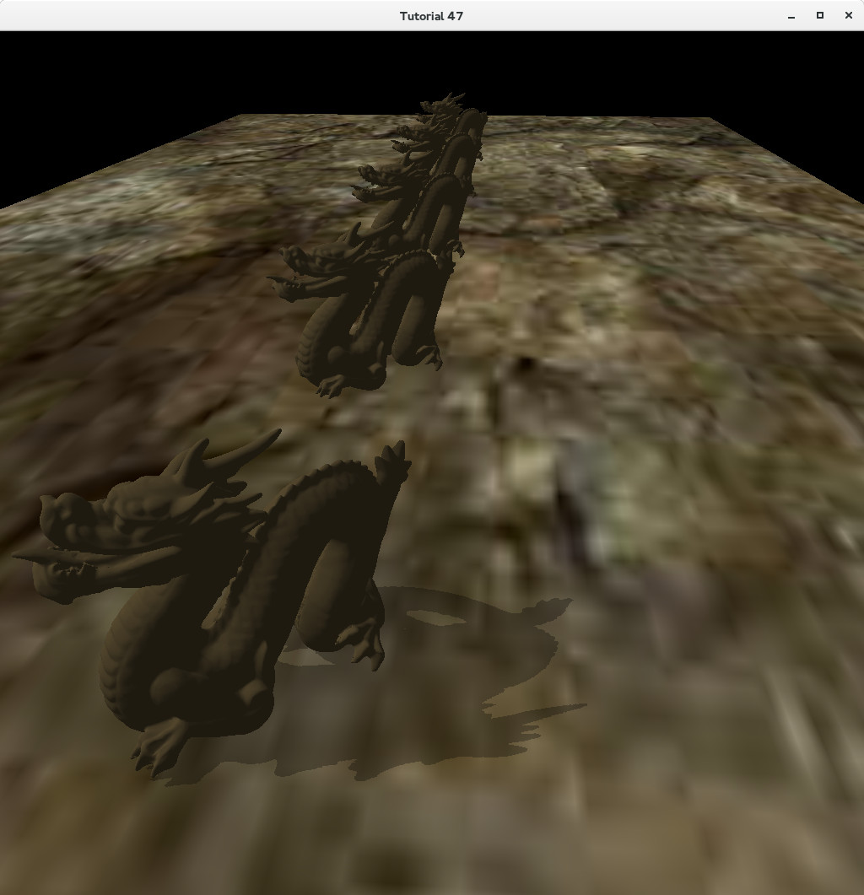The problem is that the objects are placed at distance of 30 from each other so the projection was not wide enough in order to capture everything (remember that the light direction is orthogonal to the viewer so the objects are scattered on a wide field relative to the light). Now let's multiply left/right/bottom/top by 10 (near/far planes unchanged):
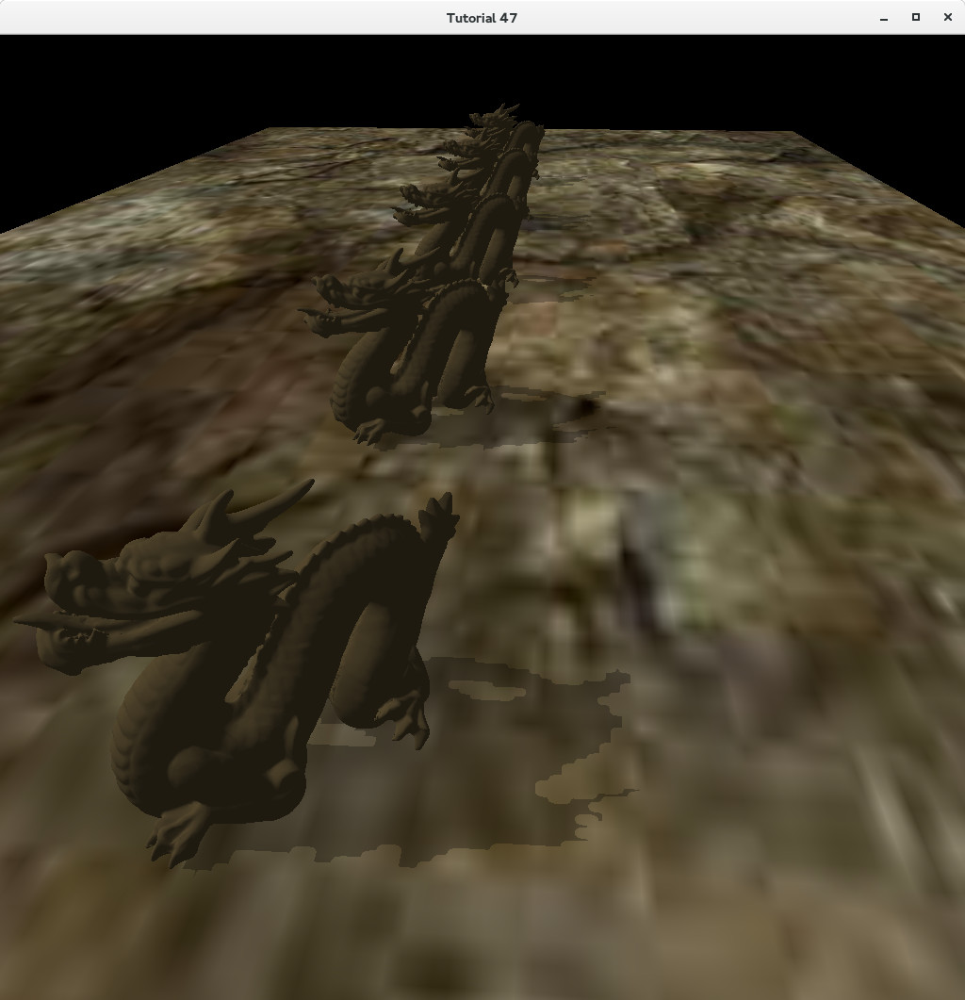Now all the objects have a shadow. However, we have a new problem. The shadows don't look as good as when only one object had a shadow. This problem is called Perspective Aliasing and the reason is that many pixels in view space (when rendering from the camera point of view) are mapped to the same pixel in the shadow map. This makes the shadows look kind of blocky. When we increased the dimensions of the orthographic box we increased that ratio because the shadow map remains the same but a larger part of the world is now rendered to it. Perspective Aliasing can be mitigated somewhat by increasing the size of the shadow map but you cannot go too far with that as there is a negative impact on memory footprint. In future tutorials we will explore advanced techniques to handle this problem.
Source walkthru
The main difference between shadow mapping with directional and spot lights is the orthographic vs. perspective projection. This is why I'm only going to review the changes required for shadows with directional light. Make sure you are highly familiar with tutorial 23 and tutorial 24 before proceeding because most of the code is the same. If you have a working version of shadows with spot lights you will only need to make a few minor changes to get directional lights shadows working.
(matrix_3d.cpp:165)
void Matrix4f::InitOrthoProjTransform(const OrthoProjInfo& p)
{
float l = p.l;
float r = p.r;
float b = p.b;
float t = p.t;
float n = p.n;
float f = p.f;
m[0][0] = 2.0f/(r - l); m[0][1] = 0.0f; m[0][2] = 0.0f; m[0][3] = -(r + l)/(r - l);
m[1][0] = 0.0f; m[1][1] = 2.0f/(t - b); m[1][2] = 0.0f; m[1][3] = -(t + b)/(t - b);
m[2][0] = 0.0f; m[2][1] = 0.0f; m[2][2] = 2.0f/(f - n); m[2][3] = -(f + n)/(f - n);
m[3][0] = 0.0f; m[3][1] = 0.0f; m[3][2] = 0.0f; m[3][3] = 1.0;
}
I've added the above function to the Matrix4f class in order to initialize the orthographic projection matrix. This function is called from Pipeline::GetWVOrthoPTrans().
(tutorial47.cpp:163)
void ShadowMapPass()
{
m_shadowMapFBO.BindForWriting();
glClear(GL_DEPTH_BUFFER_BIT);
m_ShadowMapEffect.Enable();
Pipeline p;
p.SetCamera(Vector3f(0.0f, 0.0f, 0.0f), m_dirLight.Direction, Vector3f(0.0f, 1.0f, 0.0f));
p.SetOrthographicProj(m_shadowOrthoProjInfo);
for (int i = 0; i < NUM_MESHES ; i++) {
p.Orient(m_meshOrientation[i]);
m_ShadowMapEffect.SetWVP(p.GetWVOrthoPTrans());
m_mesh.Render();
}
glBindFramebuffer(GL_FRAMEBUFFER, 0);
}
void RenderPass()
{
glClear(GL_COLOR_BUFFER_BIT | GL_DEPTH_BUFFER_BIT);
m_LightingTech.Enable();
m_LightingTech.SetEyeWorldPos(m_pGameCamera->GetPos());
m_shadowMapFBO.BindForReading(SHADOW_TEXTURE_UNIT);
Pipeline p;
p.SetOrthographicProj(m_shadowOrthoProjInfo);
p.Orient(m_quad.GetOrientation());
p.SetCamera(Vector3f(0.0f, 0.0f, 0.0f), m_dirLight.Direction, Vector3f(0.0f, 1.0f, 0.0f));
m_LightingTech.SetLightWVP(p.GetWVOrthoPTrans());
p.SetPerspectiveProj(m_persProjInfo);
p.SetCamera(m_pGameCamera->GetPos(), m_pGameCamera->GetTarget(), m_pGameCamera->GetUp());
m_LightingTech.SetWVP(p.GetWVPTrans());
m_LightingTech.SetWorldMatrix(p.GetWorldTrans());
m_pGroundTex->Bind(COLOR_TEXTURE_UNIT);
m_quad.Render();
for (int i = 0; i < NUM_MESHES ; i++) {
p.Orient(m_meshOrientation[i]);
m_LightingTech.SetWVP(p.GetWVPTrans());
m_LightingTech.SetWorldMatrix(p.GetWorldTrans());
m_mesh.Render();
}
}
These are the complete shadow and render passes and they are practically the same as for spot lights so we don't have to review them fully. Just a couple of differences that must be noted here. First is that I've added a member called m_shadowOrthoProjInfo in order to keep the orthographic projection variables separate from the existing perspective projection variables that are used for rendering. m_shadowOrthoProjInfo is used to configure the WVP for the light point of view and it is initialized with the values of -100,+100,-100,+100,-10,+100 for left, right, bottom, top, near, far, respectively.
The second change is that when we configure the camera for that light WVP matrix we use the origin as the location of the light. Since a directional light only has a direction and no position we don't care about that variable in the view matrix. We just need to rotate the world so that the light points toward the positive Z-axis.
(lighting.fs:96)
vec4 CalcDirectionalLight(vec3 Normal, vec4 LightSpacePos)
{
float ShadowFactor = CalcShadowFactor(LightSpacePos);
return CalcLightInternal(gDirectionalLight.Base, gDirectionalLight.Direction, Normal, ShadowFactor);
}
void main()
{
...
vec4 TotalLight = CalcDirectionalLight(Normal, LightSpacePos);
...
}
The shaders are almost exactly the same - we just need to calculate a shadow factor for the directional light as well.